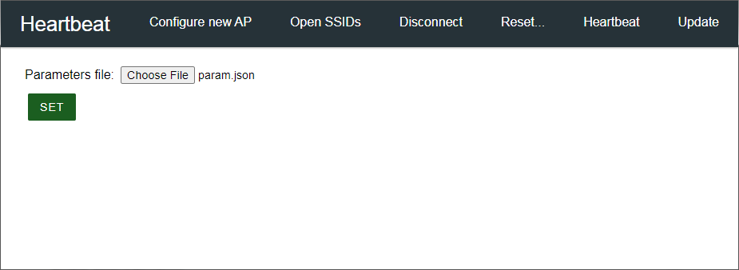

Using Filesystem
Selecting appropriate Filesystem¶
There are two file systems for utilizing the onboard flash on the ESP8266 or the ESP32, SPIFFS and LittleFS. The file system to be applied is determined at the time of the sketch built. AutoConnect will determine as a file system to apply either SPIFFS or LittleFS according to the macro definition in AutoConnectDefs.h and has the following two definitions to include the file system.
#define AC_USE_SPIFFS
#define AC_USE_LITTLEFS
The AC_USE_SPIFFS and AC_USE_LITTLEFS macros declare which file system to apply. Their definitions are contradictory to each other and you cannot activate both at the same time.
Each platform supported by AutoConnect has a default file system, which is LittleFS for ESP8266 and SPIFFS for ESP32. Neither AC_USE_SPIFFS nor AC_USE_LITTLE_FS needs to be explicitly defined as long as you use the default file system. The default file system for each platform is assumed.
SPIFFS has deprecated for ESP8266
SPIFFS has deprecated on EP8266 core. AC_USE_SPIFFS flag indicates that the migration to LittleFS has not completed for the Sketch with ESP8266. You will get a warning message when you compile a sketch using SPIFFS.
Also, LittleFS support on the ESP32 is expected to be in the future beyond Arduino ESP32 core v2. If you want to use the LittleFS library on your ESP32, you must use a third-party source provided externally.
The file system intended by the sketch must match the file system applied to AutoConnect. (i.e. it is provided by the definitions of AC_USE_SPIFFS and AC_USE_LITTLEFS) For example, if the sketch includes LittleFS.h, but AC_USE_SPIFFS is defined, the sketch will not be able to sucessfully acces the built file system.
Filesystem applied to PageBuilder must match to AutoConnect¶
Also, PageBuilder has a definition of file system choices to use, similar to AutoConnect. It is the definition of PB_USE_SPIFFS and PB_USE_LITTLEFS in PageBuilder.h of PageBuilder library source, and its role is the same as these of AutoConnect.
#define PB_USE_SPIFFS
#define PB_USE_LITTLEFS
Note the version of each library
Support for AC_USE_SPIFFS / AC_USE_LITTLEFS and PB_USE_SPIFFS / PB_USE_LITLTEFS is from AutoConnect 1.3.0 and PageBuilder 1.5.0 and later.
To determine the file system to be used¶
The most direct way is to edit the library source AutoConnectDefs.h directly and uncomment the definition of #define AC_USE_SPIFFS or #define AC_USE_LITTLES. In addition to that editing work, the definitions of PB_USE_SPIFFS and PB_USE_LITTLEFS in PageBuilder.h also need to be changed. Their definitions must match the AC_USE_SPIFFS and AC_USE_LITTLEFS definitions in AutoConnectDefs.h. PB_USE_SPIFFS enabled and AC_USE_LITTLEFS enabled state is not allowed, and vice-versa.
However, this way makes the AutoConnect library inconsistent and may include your unintended file system on a project-by-project basis. By using PlatformIO, you can efficiently select a file system. That way, you can choose any file system for each project without polluting the library source.
To apply a different file system for each project without modifying the library source code, add the following build_flags directive to platformio.ini as a project configuration file of each project.
[env:esp_wroom_02]
platform = espressif8266
board = esp_wroom_02
framework = arduino
lib_extra_dirs = ~/Documents/Arduino/libraries
lib_ldf_mode = deep
build_flags =
-DAC_USE_SPIFFS
-DPB_USE_SPIFFS
upload_speed = 921600
monitor_speed = 115200
The build_flags as build options allows PlatformIO can provide preprocessor macro definitions. -D name for build_flags, which specifies a predefined content, is treated as 1 equal to the #define directive.
Library dependency search with PlatformIO
If #include <LITTLEFS.h> becomes Not Found with PlatformIO built, try specifying lib_ldf_mode=deep with platformio.ini. Due to the deep nesting by preprocessor instructions, the include file cannot be detected by the chain mode (nested include search) of PlatformIO's Library Dependency Finder. See also FAQ.
LittleFS for ESP8266 with PlatformIO
The SPIFFS file system is used by default in order to keep legacy projects compatible. To choose LittleFS as the file system with ESP8266 platform, it should be explicitly specified using board_build.filesystem option in platformio.ini as follows:
[env:esp_wroom_02]
platform = espressif8266
framework = arduino
board = esp_wroom_02
board_build.filesystem = littlefs
...
Practical situations where AutoConnect uses a file system¶
AutoConnect has the ability to use the file system that is:
-
Place the custom web page defined in the JSON document in an external file and separate it from the sketch source code. This approach allows you to change the layout design of your custom web page by simply modifying the external file without recompiling the sketch.
-
Use the AutoConnectFile element to upload some parameters that control sketch execution to the file system on the ESP module. You can upload from the browser on the client PC via OTA.
The following is an example of a scenario that embodies the combination of these facilities. The sketch below controls LED that blinks like heartbeat by PWM (Pulse-Width Modulation) from ESP8266. Custom web page contains an AutoConnectFile element that allows you to upload a parameter file to the ESP module from the browser on the client PC. And place the custom web page as a JSON document on the LittleFS of the ESP module.
Screenshot¶
The sketch UI of this scenario provides as shown by the screenshot below:

It arranges in a very simple style to focus on how the sketch incorporating AutoConnect will handle the file system. This custom web page is loaded from LittleFS at the beginning of the sketch processing and has already been uploaded to LittleFS on the ESP8266.
Custom Web page JSON definition¶
It has a file name as "custom_pages.json" and has two pages whose URI are "/" and "/set". An AutoConnectFile element named "param" is placed to upload a file from a client browser that contains the parameters to determine the behavior of this sketch. (ie. LED blinking cycle of the heartbeat)
After selecting the parameter file to upload, click the AutoConnectSubmit element named "set". This will upload the selected file to LittleF on the ESP8266 module and start processing the sketch-coded "/set" page handler.
[
{
"title": "Heartbeat",
"uri": "/",
"menu": true,
"element": [
{
"name": "param",
"type": "ACFile",
"label": "Parameter file:",
"store": "fs"
},
{
"name": "set",
"type": "ACSubmit",
"value": "SET",
"uri": "/set"
}
]
},
{
"title": "Heartbeat",
"uri": "/set",
"menu": false,
"element": [
{
"name": "param",
"type": "ACText"
}
]
}
]
Parameter file¶
You can make the parameters that determine the heartbeat cycle with the JSON definition using your favorite text editor as follows:
{
"led": 16,
"freq": 1000,
"range": 511,
"cycle": 2
}
We use PWM to make the LED blinking gently repeat like a heartbeat. In addition, we also need the interval time to blink. We will put these values in the parameter file.
- led : Blinking LED assignment pin (Depending on your ESP8266 module)
- freq : PWM frequency [ms] (milliseconds unit)
- range : PWM range (511 ~ 1023, 511 ~ 767 is recommended for smooth blinking)
- cycle : Heartbeat cycle [s] (seconds unit. 4 seconds or less recommended)
Save the text file with these settings as param.json on your PC. You can upload this file to the ESP8266 module using the AutoConnectFile element named param above. When executing a sketch, the settings described in this file will be read by the /set custom web page handler to control the analog output of the ESP8266 module.
The sketch¶
Below is the final sketch that allows the LED to blink like a heartbeat according to the settings contained in the two external files custome_pages.json and param.json mentioned above.
#include <Arduino.h>
#include <ESP8266WiFi.h>
#include <ESP8266WebServer.h>
#include <LittleFS.h>
#include <AutoConnect.h>
#include <ArduinoJson.h>
AutoConnect portal;
AutoConnectConfig config;
// File names
const char* paramFile = "param.json";
const char* auxFile = "custom_pages.json";
// Parameters for LED PWM control
unsigned int led = 0;
unsigned long freq;
unsigned long range;
unsigned int cycle;
const unsigned long reso = 10;
int duty;
int increase;
unsigned long tmCycle;
unsigned long tmStep;
String onSet(AutoConnectAux& aux, PageArgument& args) {
StaticJsonDocument<128> doc;
// Open uploaded parameter and parse parameters with JSON
File param = LittleFS.open(paramFile, "r");
if (param) {
DeserializationError error = deserializeJson(doc, param);
if (error) {
aux["param"].value = "JSON de-serialization failed: " + String(error.c_str());
}
else {
// Parsing the parameter JSON was successful.
// Read the parameters as JSON document from the uploaded parameter file.
led = doc["led"];
freq = doc["freq"];
range = doc["range"];
cycle = doc["cycle"];
// Set PWM conditions
analogWriteFreq(freq);
analogWriteRange(range);
increase = ((range / cycle) / reso) / 2;
duty = 0;
tmCycle = millis();
tmStep = tmCycle;
// Echo back uploaded parameters to Custom web page
String result;
serializeJson(doc, result);
aux["param"].value = result;
}
param.close();
}
else
aux["param"].value = String(paramFile) + String(" open error");
return String();
}
void setup() {
delay(1000);
Serial.begin(115200);
Serial.println();
LittleFS.begin();
// Load Custom web pages from LittleFS
File aux = LittleFS.open(auxFile, "r");
if (aux) {
// Attach Custom web page and handler
portal.load(aux);
portal.on("/set", onSet);
// Exclude the HOME item from the menu as the custom web page will
// be placed in the root path.
config.menuItems = 0x00ff & ~(AC_MENUITEM_HOME | AC_MENUITEM_DEVINFO);
config.ota = AC_OTA_BUILTIN; // You can even update this sketch remotely
portal.config(config);
// You can close the file once the custom web page has finished loading.
aux.close();
}
else {
Serial.print(auxFile);
Serial.println(" open error");
}
portal.begin();
}
void loop() {
if (led) { // The heartbeat begins after the led parameter will set.
if (millis() - tmStep > abs(increase)) {
duty += increase;
if (duty < 0)
duty = 0;
analogWrite(led, duty);
tmStep = millis();
}
if (millis() - tmCycle > (cycle * 1000) / 2) {
increase *= -1;
tmCycle = millis();
}
}
portal.handleClient();
}
This final sketch consists of four components:
-
Include appropriate header files: Include the appropriate file system header files to operate the external files of the ESP8266 module by the sketch. For LitteleFS, it is
#include <LittleFS.h>. Also, since we wrote the parameter setting file in JSON, we will deserialize it using ArduinoJson. The header required for the deserialization process is#include <ArduinoJson.h>. -
setup: In the sketch setup phase, the procedure is similar to other sketches when using AutoConnect. In this case, the following steps are appended to apply the file system.
- Start the file system as LittleFS. Then open the custom web page definition file. Upload this file as a LittleFS file on the ESP8266 module in advance.
- Arduino can handle the opened file as a stream, so register the file stream with AutoConnect using the AutoConnect::load function. This procedure is also detailed in the documentation Loading & saving AutoConnectElements with JSON.
-
loop: In the loop, the duty is calculated and analog output is performed to the LED pin. Duty is a value for PWM. PWM is a modulation method that can adjust strength of electric power by turning the pulse train on and off at regular intervals and change the on-time width. In this sketch, the LED on-time is dynamically changed and supplied as the PWM duty to achieve the slow blinking like the heartbeat. The loop calculates this dynamic on-time change from the heartbeat cycle time (
cyclesetting ofparam.json) and executes analogWrite at the appropriate timing. Thefreqvalue in the parameter settings indicates the regular interval of the PWM.Do not use delay in a loop to create time variation for PWM
It is a fault often found in careless sketches. An HTTP request is sent to the ESP8266 module each time you interact with the AutoConnect menu from the client browser. The request is properly answered by the AutoConnect::handleClient function. The delay function in the loop obstructs the flow of its processing. Remember that the sketching process will be suspended for the time period you specify by the delay.
-
/setcustom web page handler: It is namedonSetfunction in above sketch. TheonSethandler retrieves PWM settings using ArduinoJson deserialization from the uploadedparam.jsonfile. Each fetched setting value is stored in each global variable. The loop function refers to that value to achieve PWM pulse control.
Adapts the sketch to the selected file system in AutoConnect¶
AutoConnect determines the appropriate file system instance according to the AC_USE_SPIFFS or AC_USE_LITTLEFS macro definition. This determination is made by the c++ preprocessor when the sketch is built. It then exports a macro definition that identifies the determined file system. Its macro definition allows the sketch to reference a valid file system after including the AutoConnect.h header file.
The following two macro definitions, which can be referenced after including the AutoConnect.h header file, help the sketch choose the appropriate file system.
- AUTOCONNECT_USE_SPIFFS: AutoConnect uses SPIFFS. The sketch should include
SPIFFS.h. Also, the file system instance isSPIFFS. - AUTOCONNECT_USE_LITTLEFS: AutoConnect uses LITTLEFS. The sketch should include
LittleFS.h. Also, the file system instance isLittleFS.
Combining the c++ preprocessor directives with the two macro definitions above, you can write a common sketch code for both SPIFFS and LittleFS, as shown in the code as follows:
#include <AutoConnect.h>
#ifdef AUTOCONNECT_USE_LITTLEFS
#include <LittleFS.h>
#if defined(ARDUINO_ARCH_ESP8266)
FS& FlashFS = LittleFS;
#elif defined(ARDUINO_ARCH_ESP32)
fs::LittleFSFS& FlashFS = LittleFS;
#endif
#else
#include <FS.h>
#include <SPIFFS.h>
fs::SPIFFSFS& FlashFS = SPIFFS;
#endif
void setup() {
...
FlashFS.begin();
...
}